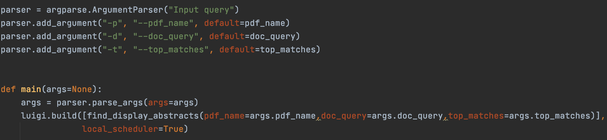
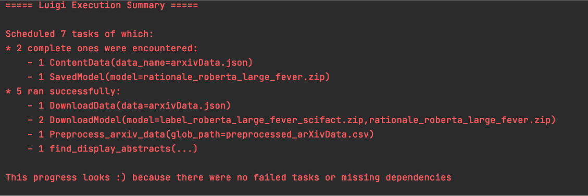
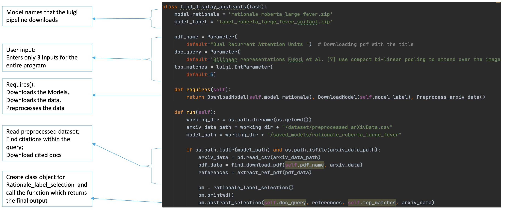

LUIGI PIPELINE¶
UNDERSTANDING THE TASKS WORKFLOW
The entire workflow has been split into 5 tasks. The first three tasks are used to download the data and models while the fifth task runs these models over the user input and displays an output. The tasks are explained in detail below.
Task 1: Download data from S3
Task 2: Download Rational Selection model from S3
Task 3: Download Label Prediction model from S3
Task 4: Preprocessing of the Arxiv dataset
Task 5:
Receive User Input: claim, the name of pdf the claim exists in and the number of top matches required
Parse the user input and extract citations from the user input of the claim using regular expressions.
Find cited documents within the claim and map it to a link within the arxiv dataset. Download these documents from the https://arxiv.org/ website
Preprocess downloaded documents
Run models on downloaded documents and receive an output
Display output to the user
RUNNING THE PROGRAM
Fig 6
To run the entire program, the user is only required to input the claim , the pdf name of the document that contains the claim and top matches. These inputs are collected using the argument parser. The entire luigi pipeline is called using the luigi.build(Find_Display_Abstracts) task call.
LUIGI OUTPUT
Fig 7
Notice how the user has only executed a single luigi task which is luigi.build(Find_Display_Abstracts). This is the final task in the luigi tasks workflow. This final task requires that the first four tasks be completed which correspond to the download of data, models and preprocessing of the data. The final task ensures that all other tasks have run successfully, the data and models are downloaded and will then run the models over the provided input. This task has been explained in more detail below.
LUIGI TASK IN DETAIL: FIND_DISPLAY_ABSTRACTS
Fig 8
find_display_abstracts is the luigi task invoked by the program to run the entire workflow and display the output to the user. The input to this task are the claim , the pdf name of the document that contains the claim and top matches.
The task checks that the rational selection and label prediction models are downloaded successfully. It also checks that the arxiv dataset is downloaded and preprocessed. Only if these steps are complete, the task will run the models over the user claim within it’s run method. The rationale_label_selection class is utilized to implement the models over the claim entered by the user. This class contains functions that perform preprocessing tasks on the data and apply the models over the claim.